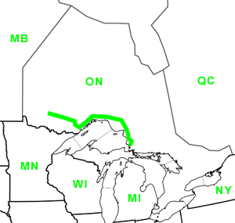

Day Forty
Ignace, ON - Batchawana Bay, ON
Date: 07/20/2002
Distance: 558 miles
Weather: Cloudy 80's
A new record in miles covered. We spent all day, about 12 hours, driving.
We passed the great Lake Superior. Hard to really say Superior since we hadn't seen the others.
We stopped in Wawa for another Subway sandwich dinner. Geese stop in Wawa, and they seem to be very proud of this fact as they had three giant geese around town.
We stopped to check one out, and in the 4 minute stop, we lost the keys to the car. We had only ventured 20 feet from the car, yet we couldn't seem to find them anywhere. Finally they were discovered deep in the seat crack. Back on the road.
We made it most of the way around the lake. Today's navigation was odd because the map was crunched into a 60 mile scale, when almost all the other maps were a 30 mile scale.
We stopped at Pancake Bay Provincial Park. Called so because, back in the day, passing travelers would be low on supplies and would use their remaining flour for pancakes. Or something to that effect.
The place was huge. 350 campsites.